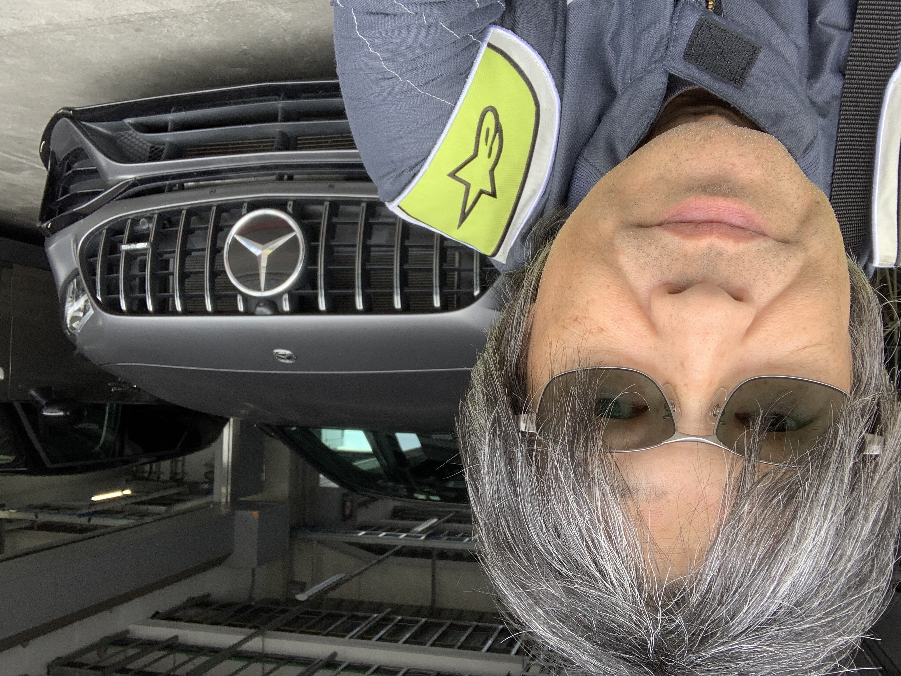
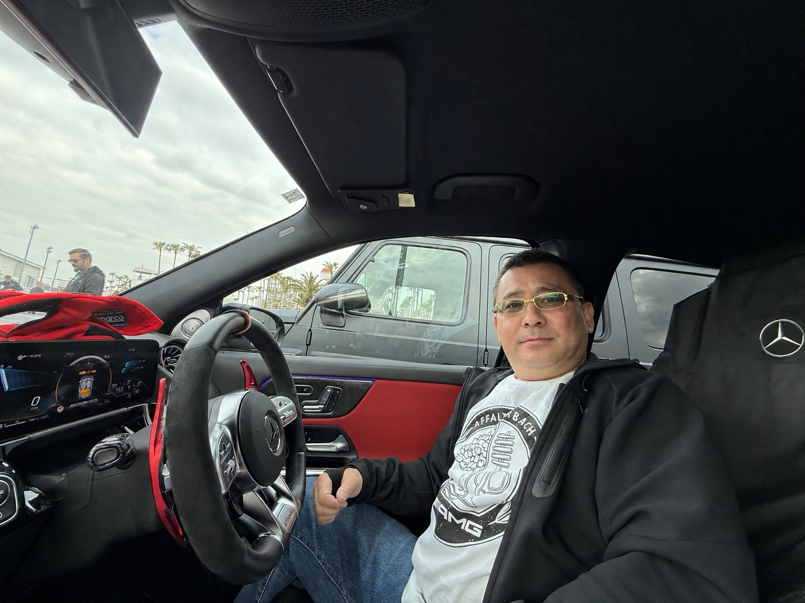

MEMBER SPOTLIGHT ARCHIVE
Member Spotlight
東京ハブを支えてくださっているメンバーをご紹介します。

H-san
H-sanは、東京ハブの立ち上げ期から活動を支えてくださっているファウンディングメンバーの一人で、サーキット関連の企画やアドバイスを中心にサポートいただいています。
サーキットでも一般道でも洗練された走りを魅せるAMG。その特別な一台を駆るオーナー様同士、さまざまなイベントを通して、ここでしか味わえない体験を共に作り出し、分かち合うことができれば幸いです。

Y-san
Y-sanは、東京ハブの立ち上げ期から活動を支えてくださっているファウンディングメンバーの一人で、パートナーシップを担当されています。
ブランドや企業とのつながりを構築し、東京ハブの活動を支える重要な役割を担っています。従来のメルセデス・ベンツでは体感出来ないパワフルさと優雅さを兼ね備えたAMGのパフォーマンスは、毎日ドライブしたくなる興奮を提供します。AMGオーナー同士でその楽しさと情熱を共有し、このコミュニティを通じてAMGの魅力を広く発信していきたいと考えています。

O-san
機械メーカーでエンジニアとして培った経験と、機械・ドイツ・そして“走る楽しさ”への情熱から、自然な流れでAMGオーナーになりました。
Private Loungeで出会えた仲間との時間を何より大切にし、現在はTokyo Hubの運営サポートにも積極的に参加しています。仲間とともに、より楽しく有意義なコミュニティづくりを目指しています。